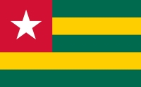

Essodong N'GNAMA
About Me
My name is Essodong N'GNAMA. i was born in Kara in the Northren side of my country Togo but currently living in the Capital City Lome. I am from a wonderful family of 6. i am currently working as a civil engineer in a Big Construction in my country, i am also studying Software development at BYU-Idaho. i love reading, eat and play basketball.
Togo

Togo is a very small country located in west africa. the official language is French and we also have some local languages like Ewe, Kabiyé, Tem, Ifè, Yoruba. Togo is also well known for its beautiful beaches, wild animal, and the love and respect towards foreigners and visitors. Togo has the biggest voodoo market in the world.